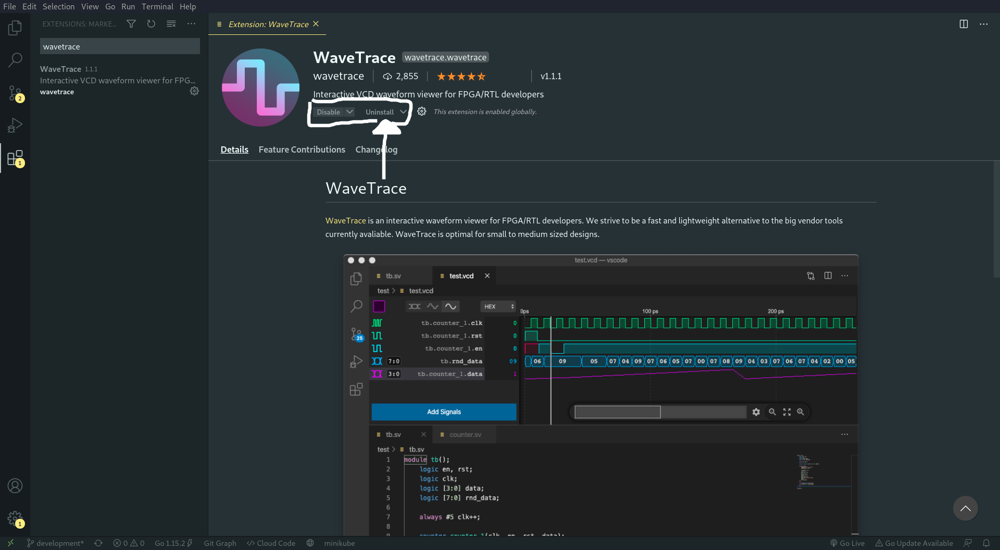

FPGA Series: (0x2) Development Setup
Pada kali ini saya akan memberi penjelasan mengenai tahapan-tahapan yang bisa dilakukan untuk menyiapkan tools-tools yang akan dipakai untuk development nya.
The series
Series nya ini saya bentuk secara berurut menggunakan penomoran dalam bentuk hexadecimal (bagi yang belum tau) maka dari itu pada series kedua ini atau series 0x2 saya membahas persiapan tools-tools yang dipakai untuk development nya.
[Persiapan Development] -> berikut tertera ToC (Table of Content) dari artikel ini :
| Pembahasan |
|---|
| Icarus Verilog |
| GTK Wave |
| WaveTrace |
| Bonus Resource |
| What's next ? |
Icarus Verilog
Sebenarnya saya sangat beruntung dikarenakan dosennya menyuruh untuk memakai verilog dibandingkan bahasa lainnya, karena verilog ini memiliki support yang sangat luas termasuk pada open-source tools yang ada.
Salah satu tools nya adalah Icarus Verilog atau biasa disebut dengan singkatannya iverilog, tool ini berguna untuk meng-compile sekaligus mensimulasikan program yang sudah kita buat menggunakan bahasa verilog (penjelasan lebih lengkap ada pada websitenya).
Cara instalasi nya akan saya bagi menyesuaikan os nya :
GNU/Linux
Untuk os linux yang menggunakan package
aptbisa langsung saja install dengan commandsudo apt install iverilog, untuk package lainnya saya belum coba akan tetapi ada cara alternatif bila belum disediakan oleh package manager nya.Cara alternatif nya adalah sebagai berikut, saya langsung tuliskan command yang diperlukan tanpa penjelasan, untuk penjelasan mengenai command nya (dan argumen argumen lainnya) silahkan liat langsung pada repository di github nya.
sudo apt install git git clone https://github.com/steveicarus/iverilog.git iverilog cd iverilog sh autoconf.sh ./configure make make installWindows
Untuk windows sangat mudah, tinggal pergi ke link berikut, lalu download
setup.exeuntuk iverilog versi terakhir, dan jalankan dengan klik dua kali file nya.Untuk men-check bila program telah terinstall dengan baik atau belum, cukup buka cmd(command prompt) / powershell, tergantung terminal yang anda sukai, lalu ketikkan
iverilog -h.╭─f4r4w4y@blackrock ~/Downloads ╰─$ iverilog -h Usage: iverilog [-EiSuvV] [-B base] [-c cmdfile|-f cmdfile] [-g1995|-g2001|-g2005|-g2005-sv|-g2009|-g2012] [-g<feature>] [-D macro[=defn]] [-I includedir] [-L moduledir] [-M [mode=]depfile] [-m module] [-N file] [-o filename] [-p flag=value] [-s topmodule] [-t target] [-T min|typ|max] [-W class] [-y dir] [-Y suf] [-l file] source_file(s) See the man page for details.Jika output seperti diatas maka
iverilogsudah terinstall.Jika terdapat error apapun yang tidak dipahami silahkan comment dibawah, insyaAllah saya jawab secepatnya.
MacOS
Untuk OS unik satu ini saya tidak tau dan tidak bisa memverifikasi cara yang tepat gimana (karena ga punya + mahal :v), jadi saya kasih link ini saja http://macappstore.org/icarus-verilog/.
Jika saya lihat berdasarkan command yang dijalankan memang sepertinya website itu sudah menjalankan instalasi dengan benar, jadi tinggal ikuti saja arahan pada websitenya.
Note:
Bisa juga menggunakan command yang dipakai untuk instalasi linux diatas, hanya saja untuk bagian instalasi git nya silahkan cari sendiri di internet dan juga diperlukan untuk mendownload dan install software Xcode terlebih dahulu.
GTK Wave
Tools ini berguna untuk menampilkan hasil sinyal yang telah didapatkan berdasarkan hasil program yang dicompile oleh iverilog.
Untuk yang satu ini, instalasi nya sudah dijelaskan dengan sangat jelas di website nya.
Untuk linux bisa juga dengan
sudo apt install gtkwaveatau menyesuaikan dengan package manager masing-masing karena kemungkinan besar pasti ada di semua package manager.Mungkin MacOS juga bisa dengan
brew install gtkwave.
jika tidak bisa maka download dari link berikut https://sourceforge.net/projects/gtkwave/files/ download file yang ada akhiranosx-appnya lalu install seperti biasa.Untuk sama dengan MacOS tetapi download file yang akhirannya
bin-win32ataupunbin-win64menyesuaikan dengan arsitektur komputer anda masing-masing.
WaveTrace
Tools ini berfungsi seperti halnya GTK Wave, hanya saja saya lebih memilih ini ketimbang GTK Wave dikarenakan saya bisa menggunakannya langsung dari vscode, jadi saya tidak perlu pindah pindah aplikasi untuk melihat hasil sinyal yang terbentuk dari testbench nya.
Instalasi nya sangat mudah, bisa langsung saja masuk ke website nya lalu klik pada tombol Install from Visual Studio Marketplace.
Atau langsung saja di vscode bagian extension, search Wavetrace dan klik install seperti pada gambar berikut (saya sudah menginstall nya jadi digambar tertulis uninstall, jika belum harusnya tertulis install).

Bonus Resource
Buat para manusia yang sangat-sangat tertarik dan ingin tau lebih banyak mengenai tools nya apa saja yang bisa dipakai, saya sarankan untuk menonton video berikut ini.
Open-Source Tools for FPGA Development (Talk by Marek Vašut, DENX Software Engineering)
What's next ?
Selanjutnya saya akan membahas contoh dari workflow penggunaan tool-chain yang sudah saya sebutkan diatas.
Tool-chain diatas itu merupakan tool-chain paling sederhana dan sejauh yang saya tau hanya bisa untuk sekedar academic research saja, belum bisa dipakai untuk production, karena banyak hal yang cukup menyulitkan untuk orang orang pada umumnya membuat open-source software untuk hal ini apalagi dengan adanya proprietary software / software yang berbayar, yang bisa all-in-one.
Last word
Semoga artikel nya mudah dipahami dan menyenangkan, jika memang dirasa bermanfaat silahkan sebarkan kepada yang lainnya agar ilmu nya tidak berhenti disini saja.
Terimakasih kepada Allah SWT dan juga para pembaca disini, semua yang buruk datangnya dari saya dan yang baik hanya datang dari-Nya, mohon maaf bila ada kesalahan 🙏.